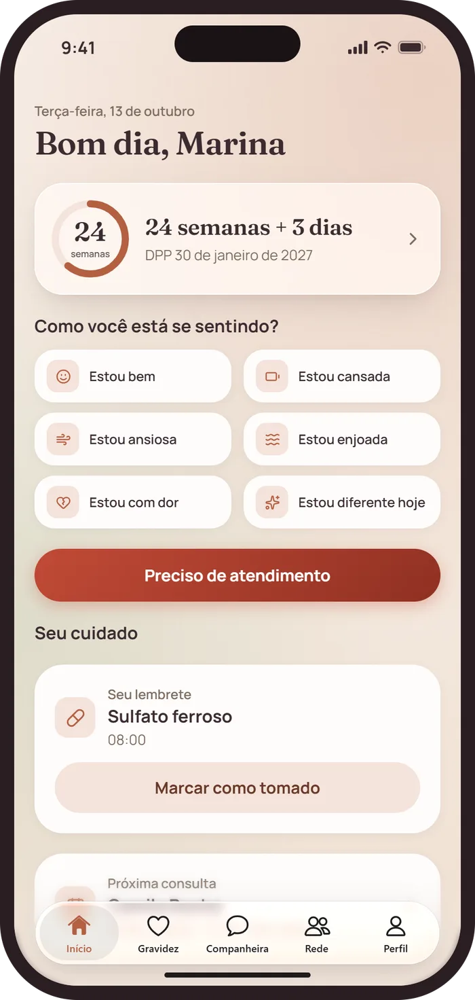
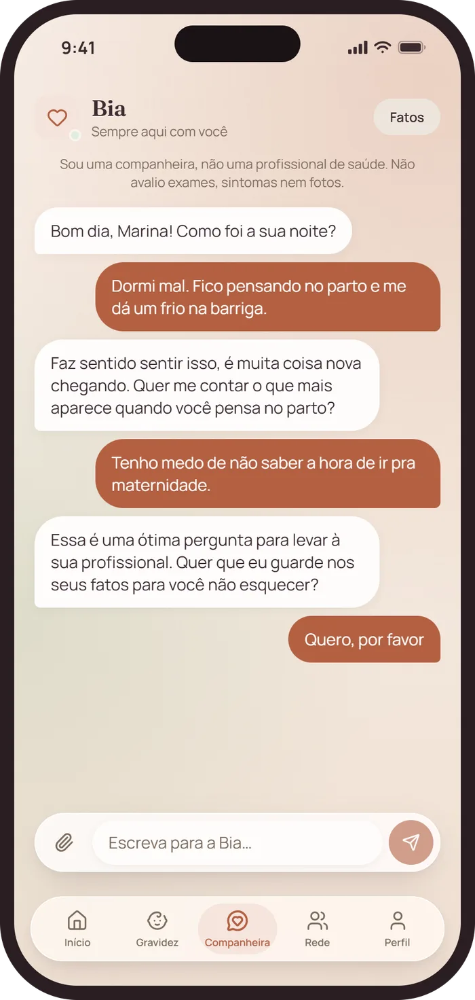
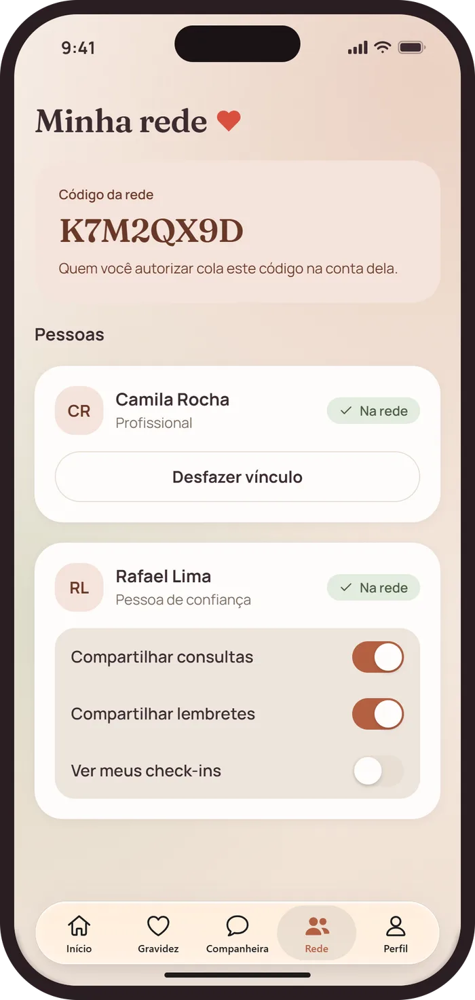
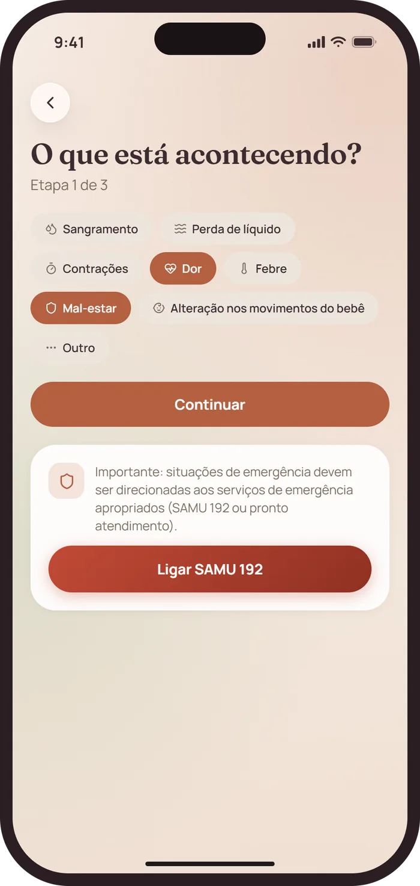
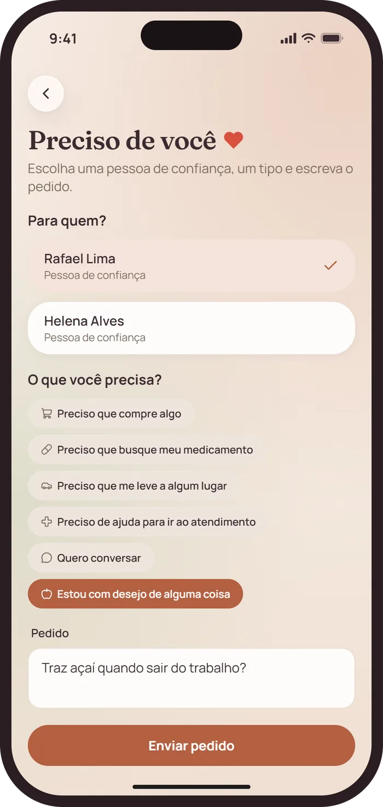
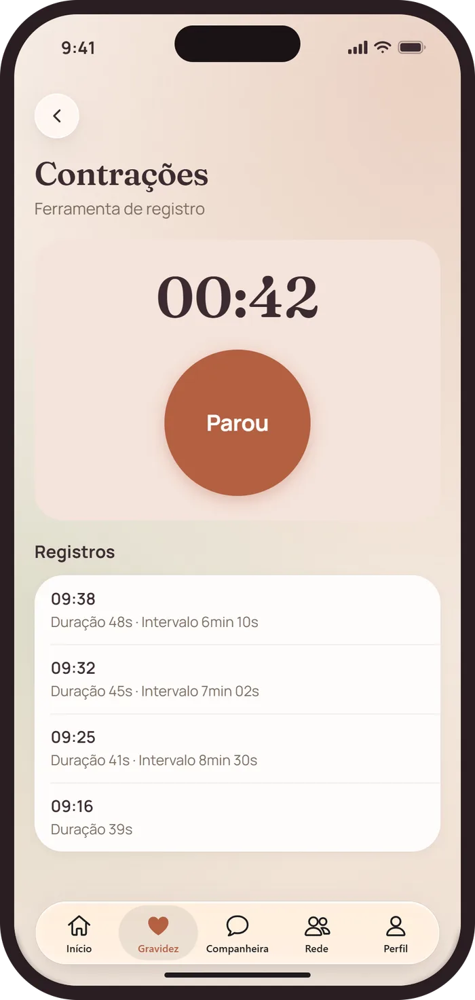
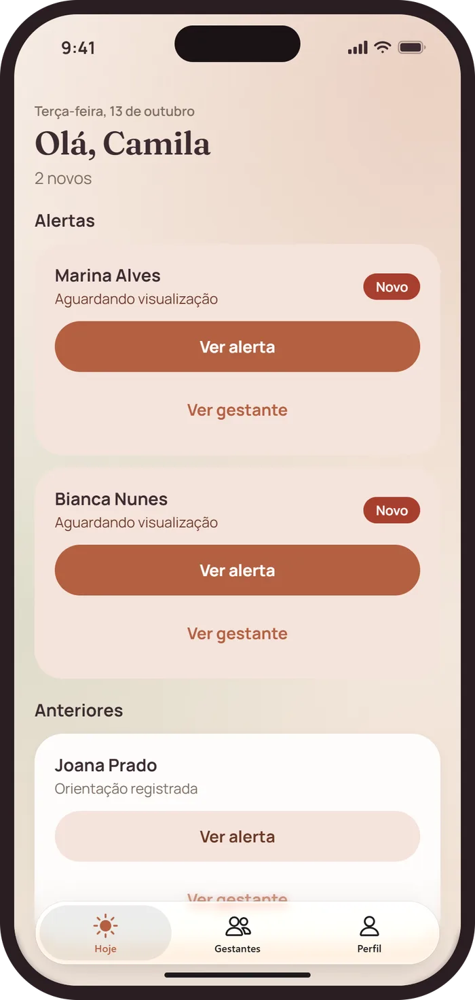
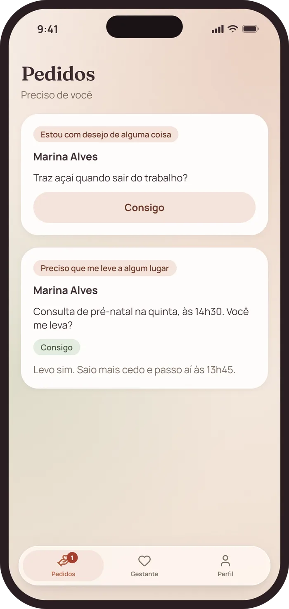

Você não está sozinha nessa gravidez.
O Juntas reúne no mesmo lugar a gestante, a profissional de saúde que a acompanha e as pessoas de confiança que estão ao lado dela.
- Em breve naApp Store
- Em breve noGoogle Play
Para iPhone e Android.


- Sem anúncios, fórum nem loja
- Você decide quem vê o quê
- Cada pessoa com a sua conta
Tudo da sua gravidez, num lugar só
O cuidado que a sua profissional cadastra, o que você registra e as pessoas que estão com você.
Seu dia, num relance
Sua idade gestacional, o lembrete do medicamento, a próxima consulta e a última orientação da sua profissional.
- Consultas, exames, medicamentos e orientações cadastrados pela sua profissional
- Check-in de como você está se sentindo, em um toque
- Contrações com duração e intervalo anotados
- Linha do tempo de tudo o que aconteceu, com busca e filtros
Bia escuta a qualquer hora
Uma companheira de conversa só sua. Ela guarda o que você quiser que ela lembre, e você lê e apaga quando quiser.
- Só funciona se você ativar
- Dá para desligar quando quiser
A Bia não é profissional de saúde: não diagnostica, não prescreve e não avalia exames, sintomas nem fotos.

Você decide quem vê o quê
Você compartilha um código e confirma cada pessoa que entra.
- Para cada pessoa de confiança, escolha se ela vê suas consultas, seus lembretes e seus check-ins
- Qualquer vínculo pode ser desfeito a qualquer momento


Peça ajuda sem cerimônia
Envie um alerta para a sua profissional com sintomas, descrição e foto opcional, e acompanhe quando ela visualizar. Ou peça uma carona, um medicamento ou um desejo a uma pessoa de confiança.
Em emergência, ligue 192 (SAMU) ou procure um pronto atendimento.
Três pessoas, um mesmo cuidado
Cada uma tem a sua conta e vê só o que precisa ver.
-
Gestante
Organiza a gravidez, monta a sua rede e conversa com a Bia.
Assinatura mensal ou anual
-
Profissional
Vê os alertas das suas gestantes, abre a ficha de cada uma e cadastra o cuidado.
Compra única
-
Pessoa de confiança
Recebe os pedidos dela, responde e acompanha o que ela decidir compartilhar.
Gratuita
Perguntas frequentes
O Juntas substitui a minha profissional de saúde?
Não. O Juntas é uma ferramenta de organização e comunicação. Não faz consulta, diagnóstico nem prescrição. Em emergência, ligue 192 (SAMU).
Quanto custa?
A gestante assina por mês ou por ano, com renovação automática. A profissional faz uma compra única. A pessoa de confiança não paga. Os preços aparecem na loja antes da compra.
Como cancelo a assinatura?
Na loja onde você comprou: no iPhone, em Ajustes, no seu nome, Assinaturas; no Android, no Google Play, em Pagamentos e assinaturas.
Quem vê os meus dados?
A profissional vinculada vê o seu cuidado. Cada pessoa de confiança vê só o que você liberar. Ninguém da sua rede vê a conversa com a Bia. Veja a política de privacidade.
Preciso usar a Bia?
Não. A Bia só funciona se você ativar, e dá para desligar quando quiser. Desligar não apaga a sua conta.
Posso excluir a minha conta?
Sim, quando quiser. Veja como excluir a conta.
Em breve na App Store e no Google Play
Dúvidas? Escreva para ctravizanutto@gmail.com.
- Em breve naApp Store
- Em breve noGoogle Play